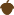
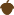

Nötchoklad
Lista ut skillnaden mellan de två chokladkakorna.
Den inslagna (högra) chokladkakan är identisk med den öppna förutom att den innehåller en extra nöt.
För att hitta nöten, ställ frågor! Markera ett område av kakan, klicka sedan på "Hur många nötter?".
För varje fråga, markera ett områdetvå områden på varje chokladkaka, klicka sedan på den blå knappen.
De två områdena får överlappa.När du listat ut var det finns en extra nöt, dra dit flaggan och tryck på Kontrollera svaret.
För att få full poäng, finn nöten med frågor
 
